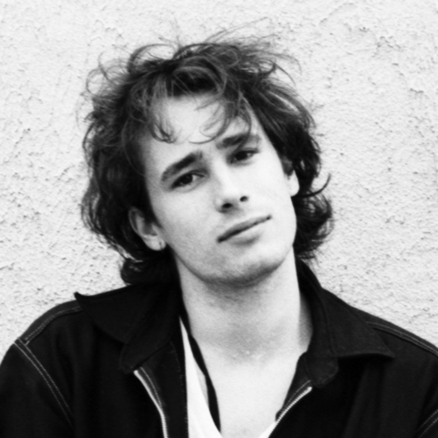

Post Malone

Post Malone é um rapper, cantor e produtor americano que mescla hip-hop, rock e pop em suas músicas. Ele ganhou popularidade com a faixa White Iverson e solidificou seu sucesso com álbuns como Beerbongs & Bentleys (2018) e Hollywood's Bleeding (2019). Seu estilo é caracterizado por letras introspectivas e um som melódico com forte presença de autotune.
Michael Jackson

Conhecido como o "Rei do Pop", Michael Jackson é um dos artistas mais influentes e vendidos da história da música. Ele ganhou destaque na infância com os Jackson 5, mas foi sua carreira solo que o consolidou como ícone mundial, com álbuns como Thriller (1982), o mais vendido de todos os tempos. Suas inovações em clipes musicais e performances eletrizantes marcaram a cultura pop de maneira duradoura.
Jeff Buckley
Jeff Buckley foi um cantor e compositor americano que, apesar de uma carreira curta, deixou uma marca duradoura com sua voz expressiva e interpretação emocional. Seu álbum mais famoso, Grace (1994), inclui uma cover de "Hallelujah" de Leonard Cohen, que se tornou uma das versões mais icônicas dessa música. Buckley faleceu tragicamente em 1997.
Frank Ocean

Frank Ocean é um cantor e compositor americano, conhecido por seu estilo único que mistura R&B, hip-hop e soul. Ele chamou atenção com o álbum Channel Orange (2012) e continuou a inovar com Blonde (2016), elogiado por sua vulnerabilidade emocional e abordagens experimentais. Ocean é uma figura influente na música contemporânea.
Tears for Fears

Uma dupla britânica formada por Roland Orzabal e Curt Smith, Tears for Fears se destacou nos anos 1980 com hits como "Everybody Wants to Rule the World" e "Shout". Suas músicas combinam pop e rock com temas introspectivos e políticos, sendo influenciados pela psicologia e temas profundos.